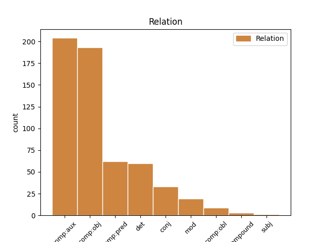
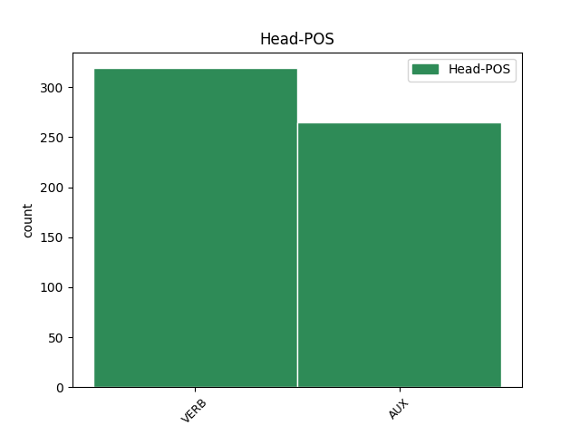
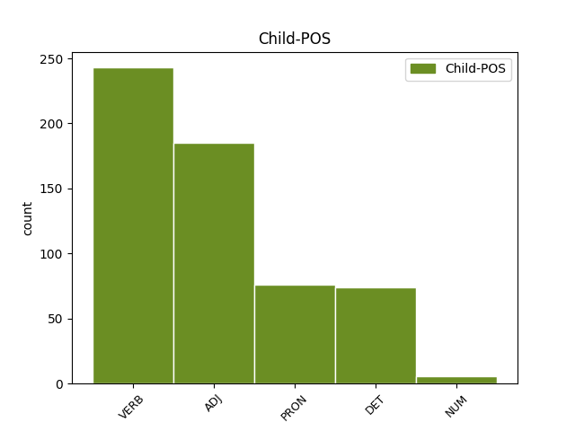

Distribution of features within this leaf



Agreement Rules sorted by frequency.
When the head token is AUX and the dependent token is VERB.
1 Aquests _ _ _ _ 0 _ _ _
2 papers _ _ _ _ 0 _ _ _
3 han _ _ _ _ 0 _ _ _
4 estat ser AUX AUX Gender=Masc|Number=Sing|Tense=Past|VerbForm=Part 0 _ _ _
5 publicats publicar VERB VERB Gender=Masc|Number=Plur|Tense=Past|VerbForm=Part 4 comp:aux _ _
6 a _ _ _ _ 0 _ _ _
7 Zutabe _ _ _ _ 0 _ _ _
8 , _ _ _ _ 0 _ _ _
9 el _ _ _ _ 0 _ _ _
10 butlletí _ _ _ _ 0 _ _ _
11 que _ _ _ _ 0 _ _ _
12 edita _ _ _ _ 0 _ _ _
13 la _ _ _ _ 0 _ _ _
14 banda _ _ _ _ 0 _ _ _
15 criminal _ _ _ _ 0 _ _ _
16 . _ _ _ _ 0 _ _ _
When the head token is VERB and the dependent token is ADJ.
1 Per _ _ _ _ 0 _ _ _
2 aquesta _ _ _ _ 0 _ _ _
3 causa _ _ _ _ 0 _ _ _
4 , _ _ _ _ 0 _ _ _
5 en _ _ _ _ 0 _ _ _
6 alguns _ _ _ _ 0 _ _ _
7 països _ _ _ _ 0 _ _ _
8 europeus _ _ _ _ 0 _ _ _
9 , _ _ _ _ 0 _ _ _
10 on _ _ _ _ 0 _ _ _
11 s' _ _ _ _ 0 _ _ _
12 han _ _ _ _ 0 _ _ _
13 produït _ _ _ _ 0 _ _ _
14 tragèdies _ _ _ _ 0 _ _ _
15 semblants _ _ _ _ 0 _ _ _
16 a _ _ _ _ 0 _ _ _
17 la _ _ _ _ 0 _ _ _
18 que _ _ _ _ 0 _ _ _
19 ara _ _ _ _ 0 _ _ _
20 hem _ _ _ _ 0 _ _ _
21 viscut _ _ _ _ 0 _ _ _
22 aquí _ _ _ _ 0 _ _ _
23 , _ _ _ _ 0 _ _ _
24 els _ _ _ _ 0 _ _ _
25 exemplars _ _ _ _ 0 _ _ _
26 de _ _ _ _ 0 _ _ _
27 races _ _ _ _ 0 _ _ _
28 com _ _ _ _ 0 _ _ _
29 el _ _ _ _ 0 _ _ _
30 pit _ _ _ _ 0 _ _ _
31 bull _ _ _ _ 0 _ _ _
32 , _ _ _ _ 0 _ _ _
33 el _ _ _ _ 0 _ _ _
34 dog _ _ _ _ 0 _ _ _
35 argentí _ _ _ _ 0 _ _ _
36 o _ _ _ _ 0 _ _ _
37 el _ _ _ _ 0 _ _ _
38 rottweiler _ _ _ _ 0 _ _ _
39 han _ _ _ _ 0 _ _ _
40 quedat quedar VERB VERB Gender=Masc|Number=Sing|Tense=Past|VerbForm=Part 0 _ _ _
41 formalment _ _ _ _ 0 _ _ _
42 prohibits prohibit ADJ ADJ Gender=Masc|Number=Plur|VerbForm=Part 40 comp:obj _ _
43 o _ _ _ _ 0 _ _ _
44 estan _ _ _ _ 0 _ _ _
45 subjectes _ _ _ _ 0 _ _ _
46 a _ _ _ _ 0 _ _ _
47 una _ _ _ _ 0 _ _ _
48 normativa _ _ _ _ 0 _ _ _
49 tan _ _ _ _ 0 _ _ _
50 rígida _ _ _ _ 0 _ _ _
51 com _ _ _ _ 0 _ _ _
52 la _ _ _ _ 0 _ _ _
53 dels _ _ _ _ 0 _ _ _
54 revòlvers _ _ _ _ 0 _ _ _
55 . _ _ _ _ 0 _ _ _
When the head token is VERB and the dependent token is DET.
1 " _ _ _ _ 0 _ _ _
2 Sento _ _ _ _ 0 _ _ _
3 vergonya _ _ _ _ 0 _ _ _
4 després _ _ _ _ 0 _ _ _
5 de _ _ _ _ 0 _ _ _
6 presenciar _ _ _ _ 0 _ _ _
7 el el DET DET Definite=Def|Gender=Masc|Number=Sing|PronType=Art 10 det _ _
8 que _ _ _ _ 0 _ _ _
9 ha _ _ _ _ 0 _ _ _
10 passat passar VERB VERB Gender=Masc|Number=Sing|Tense=Past|VerbForm=Part 0 _ _ _
11 entre _ _ _ _ 0 _ _ _
12 la _ _ _ _ 0 _ _ _
13 directiva _ _ _ _ 0 _ _ _
14 i _ _ _ _ 0 _ _ _
15 l' _ _ _ _ 0 _ _ _
16 Ajuntament _ _ _ _ 0 _ _ _
17 " _ _ _ _ 0 _ _ _
18 , _ _ _ _ 0 _ _ _
19 va _ _ _ _ 0 _ _ _
20 afirmar _ _ _ _ 0 _ _ _
21 . _ _ _ _ 0 _ _ _
When the head token is VERB and the dependent token is VERB.
1 En _ _ _ _ 0 _ _ _
2 forma _ _ _ _ 0 _ _ _
3 d' _ _ _ _ 0 _ _ _
4 entrevista _ _ _ _ 0 _ _ _
5 radiofònica _ _ _ _ 0 _ _ _
6 , _ _ _ _ 0 _ _ _
7 una _ _ _ _ 0 _ _ _
8 periodista _ _ _ _ 0 _ _ _
9 posa _ _ _ _ 0 _ _ _
10 l' _ _ _ _ 0 _ _ _
11 accent _ _ _ _ 0 _ _ _
12 en _ _ _ _ 0 _ _ _
13 alguns _ _ _ _ 0 _ _ _
14 aspectes _ _ _ _ 0 _ _ _
15 de _ _ _ _ 0 _ _ _
16 la _ _ _ _ 0 _ _ _
17 ciutat _ _ _ _ 0 _ _ _
18 que _ _ _ _ 0 _ _ _
19 ha _ _ _ _ 0 _ _ _
20 conegut conèixer VERB VERB Gender=Masc|Number=Sing|Tense=Past|VerbForm=Part 0 _ _ _
21 i _ _ _ _ 0 _ _ _
22 relatat relatar VERB VERB Gender=Masc|Number=Sing|Tense=Past|VerbForm=Part 20 conj _ _
23 l' _ _ _ _ 0 _ _ _
24 escriptor _ _ _ _ 0 _ _ _
25 . _ _ _ _ 0 _ _ _
When the head token is AUX and the dependent token is ADJ.
1 El _ _ _ _ 0 _ _ _
2 candidat _ _ _ _ 0 _ _ _
3 nacionalista _ _ _ _ 0 _ _ _
4 ha _ _ _ _ 0 _ _ _
5 estat ser AUX AUX Gender=Masc|Number=Sing|Tense=Past|VerbForm=Part 0 _ _ _
6 especialment _ _ _ _ 0 _ _ _
7 crític crític ADJ ADJ Gender=Masc|Number=Sing 5 comp:pred _ _
8 amb _ _ _ _ 0 _ _ _
9 l' _ _ _ _ 0 _ _ _
10 alcalde _ _ _ _ 0 _ _ _
11 de _ _ _ _ 0 _ _ _
12 Barcelona _ _ _ _ 0 _ _ _
13 i _ _ _ _ 0 _ _ _
14 candidat _ _ _ _ 0 _ _ _
15 socialista _ _ _ _ 0 _ _ _
16 a _ _ _ _ 0 _ _ _
17 la _ _ _ _ 0 _ _ _
18 reelecció _ _ _ _ 0 _ _ _
19 , _ _ _ _ 0 _ _ _
20 Joan _ _ _ _ 0 _ _ _
21 Clos _ _ _ _ 0 _ _ _
22 , _ _ _ _ 0 _ _ _
23 al _ _ _ _ 0 _ _ _
24 que _ _ _ _ 0 _ _ _
25 ha _ _ _ _ 0 _ _ _
26 acusat _ _ _ _ 0 _ _ _
27 de _ _ _ _ 0 _ _ _
28 tenir _ _ _ _ 0 _ _ _
29 por _ _ _ _ 0 _ _ _
30 a _ _ _ _ 0 _ _ _
31 fer _ _ _ _ 0 _ _ _
32 un _ _ _ _ 0 _ _ _
33 debat _ _ _ _ 0 _ _ _
34 cara _ _ _ _ 0 _ _ _
35 a _ _ _ _ 0 _ _ _
36 cara _ _ _ _ 0 _ _ _
37 amb _ _ _ _ 0 _ _ _
38 ell _ _ _ _ 0 _ _ _
39 per _ _ _ _ 0 _ _ _
40 debatre _ _ _ _ 0 _ _ _
41 les _ _ _ _ 0 _ _ _
42 polítiques _ _ _ _ 0 _ _ _
43 de _ _ _ _ 0 _ _ _
44 la _ _ _ _ 0 _ _ _
45 ciutat _ _ _ _ 0 _ _ _
46 . _ _ _ _ 0 _ _ _
When the head token is VERB and the dependent token is PRON.
1 A _ _ _ _ 0 _ _ _
2 més _ _ _ _ 0 _ _ _
3 , _ _ _ _ 0 _ _ _
4 Garzón _ _ _ _ 0 _ _ _
5 explica _ _ _ _ 0 _ _ _
6 que _ _ _ _ 0 _ _ _
7 Batasuna _ _ _ _ 0 _ _ _
8 ha _ _ _ _ 0 _ _ _
9 reivindicat _ _ _ _ 0 _ _ _
10 i _ _ _ _ 0 _ _ _
11 ha _ _ _ _ 0 _ _ _
12 fet fer VERB VERB Gender=Masc|Number=Sing|Tense=Past|VerbForm=Part 0 _ _ _
13 seus seu PRON PRON Gender=Masc|Number=Plur|Person=3|Poss=Yes|PronType=Prs 12 comp:obj _ _
14 els _ _ _ _ 0 _ _ _
15 continguts _ _ _ _ 0 _ _ _
16 de _ _ _ _ 0 _ _ _
17 l' _ _ _ _ 0 _ _ _
18 Alternativa _ _ _ _ 0 _ _ _
19 democràtica _ _ _ _ 0 _ _ _
20 d' _ _ _ _ 0 _ _ _
21 Euskal _ _ _ _ 0 _ _ _
22 Herria _ _ _ _ 0 _ _ _
23 d' _ _ _ _ 0 _ _ _
24 ETA _ _ _ _ 0 _ _ _
25 en _ _ _ _ 0 _ _ _
26 què _ _ _ _ 0 _ _ _
27 s' _ _ _ _ 0 _ _ _
28 establien _ _ _ _ 0 _ _ _
29 els _ _ _ _ 0 _ _ _
30 paràmetres _ _ _ _ 0 _ _ _
31 per _ _ _ _ 0 _ _ _
32 entaular _ _ _ _ 0 _ _ _
33 una _ _ _ _ 0 _ _ _
34 negociació _ _ _ _ 0 _ _ _
35 política _ _ _ _ 0 _ _ _
36 amb _ _ _ _ 0 _ _ _
37 l' _ _ _ _ 0 _ _ _
38 Estat _ _ _ _ 0 _ _ _
39 espanyol _ _ _ _ 0 _ _ _
40 . _ _ _ _ 0 _ _ _
When the head token is AUX and the dependent token is PRON.
1 El _ _ _ _ 0 _ _ _
2 Museu _ _ _ _ 0 _ _ _
3 d' _ _ _ _ 0 _ _ _
4 Història _ _ _ _ 0 _ _ _
5 de _ _ _ _ 0 _ _ _
6 Catalunya _ _ _ _ 0 _ _ _
7 , _ _ _ _ 0 _ _ _
8 que _ _ _ _ 0 _ _ _
9 ha _ _ _ _ 0 _ _ _
10 estat ser AUX AUX Gender=Masc|Number=Sing|Tense=Past|VerbForm=Part 0 _ _ _
11 un un PRON PRON Gender=Masc|Number=Sing|PronType=Ind 10 comp:pred _ _
12 dels _ _ _ _ 0 _ _ _
13 impulsors _ _ _ _ 0 _ _ _
14 de _ _ _ _ 0 _ _ _
15 la _ _ _ _ 0 _ _ _
16 iniciativa _ _ _ _ 0 _ _ _
17 , _ _ _ _ 0 _ _ _
18 s' _ _ _ _ 0 _ _ _
19 ha _ _ _ _ 0 _ _ _
20 compromès _ _ _ _ 0 _ _ _
21 a _ _ _ _ 0 _ _ _
22 cedir _ _ _ _ 0 _ _ _
23 material _ _ _ _ 0 _ _ _
24 . _ _ _ _ 0 _ _ _
When the head token is VERB and the dependent token is NUM.
1 Situats situar VERB VERB Gender=Masc|Number=Plur|Tense=Past|VerbForm=Part 0 _ _ _
2 tots _ _ _ _ 0 _ _ _
3 dos dos NUM NUM Gender=Masc|Number=Plur|NumType=Card 1 subj _ _
4 a _ _ _ _ 0 _ _ _
5 la _ _ _ _ 0 _ _ _
6 serra _ _ _ _ 0 _ _ _
7 de _ _ _ _ 0 _ _ _
8 Collserola _ _ _ _ 0 _ _ _
9 , _ _ _ _ 0 _ _ _
10 Sant _ _ _ _ 0 _ _ _
11 Genís _ _ _ _ 0 _ _ _
12 dels _ _ _ _ 0 _ _ _
13 Agudells _ _ _ _ 0 _ _ _
14 i _ _ _ _ 0 _ _ _
15 Santa _ _ _ _ 0 _ _ _
16 Maria _ _ _ _ 0 _ _ _
17 de _ _ _ _ 0 _ _ _
18 Vallvidrera _ _ _ _ 0 _ _ _
19 són _ _ _ _ 0 _ _ _
20 els _ _ _ _ 0 _ _ _
21 dos _ _ _ _ 0 _ _ _
22 únics _ _ _ _ 0 _ _ _
23 cementiris _ _ _ _ 0 _ _ _
24 parroquials _ _ _ _ 0 _ _ _
25 de _ _ _ _ 0 _ _ _
26 Barcelona _ _ _ _ 0 _ _ _
27 . _ _ _ _ 0 _ _ _
When the head token is AUX and the dependent token is NUM.
1 El _ _ _ _ 0 _ _ _
2 disseny _ _ _ _ 0 _ _ _
3 de _ _ _ _ 0 _ _ _
4 portada _ _ _ _ 0 _ _ _
5 proposat _ _ _ _ 0 _ _ _
6 per _ _ _ _ 0 _ _ _
7 la _ _ _ _ 0 _ _ _
8 jove _ _ _ _ 0 _ _ _
9 Montse _ _ _ _ 0 _ _ _
10 Sotelo _ _ _ _ 0 _ _ _
11 Rodríguez _ _ _ _ 0 _ _ _
12 , _ _ _ _ 0 _ _ _
13 de _ _ _ _ 0 _ _ _
14 només _ _ _ _ 0 _ _ _
15 set _ _ _ _ 0 _ _ _
16 anys _ _ _ _ 0 _ _ _
17 , _ _ _ _ 0 _ _ _
18 ha _ _ _ _ 0 _ _ _
19 estat estar AUX AUX Gender=Masc|Number=Sing|Tense=Past|VerbForm=Part 0 _ _ _
20 un un NUM NUM Gender=Masc|Number=Sing|NumType=Card 19 comp:pred _ _
21 dels _ _ _ _ 0 _ _ _
22 vuit _ _ _ _ 0 _ _ _
23 treballs _ _ _ _ 0 _ _ _
24 finalistes _ _ _ _ 0 _ _ _
25 del _ _ _ _ 0 _ _ _
26 concurs _ _ _ _ 0 _ _ _
27 , _ _ _ _ 0 _ _ _
28 per _ _ _ _ 0 _ _ _
29 al _ _ _ _ 0 _ _ _
30 qual _ _ _ _ 0 _ _ _
31 s' _ _ _ _ 0 _ _ _
32 havien _ _ _ _ 0 _ _ _
33 presentat _ _ _ _ 0 _ _ _
34 un _ _ _ _ 0 _ _ _
35 total _ _ _ _ 0 _ _ _
36 de _ _ _ _ 0 _ _ _
37 516 _ _ _ _ 0 _ _ _
38 obres _ _ _ _ 0 _ _ _
39 de _ _ _ _ 0 _ _ _
40 tot _ _ _ _ 0 _ _ _
41 el _ _ _ _ 0 _ _ _
42 país _ _ _ _ 0 _ _ _
43 . _ _ _ _ 0 _ _ _
Disagree Examples:
1 Segons _ _ _ _ 0 _ _ _
2 han _ _ _ _ 0 _ _ _
3 informat _ _ _ _ 0 _ _ _
4 avui _ _ _ _ 0 _ _ _
5 els _ _ _ _ 0 _ _ _
6 alcaldes _ _ _ _ 0 _ _ _
7 i _ _ _ _ 0 _ _ _
8 el _ _ _ _ 0 _ _ _
9 president _ _ _ _ 0 _ _ _
10 del _ _ _ _ 0 _ _ _
11 Consell _ _ _ _ 0 _ _ _
12 Comarcal _ _ _ _ 0 _ _ _
13 del _ _ _ _ 0 _ _ _
14 Bages _ _ _ _ 0 _ _ _
15 , _ _ _ _ 0 _ _ _
16 l' _ _ _ _ 0 _ _ _
17 empresa _ _ _ _ 0 _ _ _
18 ha _ _ _ _ 0 _ _ _
19 fet fer VERB VERB Gender=Masc|Number=Sing|Tense=Past|VerbForm=Part 0 _ _ _
20 pública públic ADJ ADJ Gender=Fem|Number=Sing 19 comp:obj _ _
21 la _ _ _ _ 0 _ _ _
22 voluntat _ _ _ _ 0 _ _ _
23 d' _ _ _ _ 0 _ _ _
24 invertir _ _ _ _ 0 _ _ _
25 en _ _ _ _ 0 _ _ _
26 la _ _ _ _ 0 _ _ _
27 conca _ _ _ _ 0 _ _ _
28 minera _ _ _ _ 0 _ _ _
29 del _ _ _ _ 0 _ _ _
30 Bages _ _ _ _ 0 _ _ _
31 , _ _ _ _ 0 _ _ _
32 però _ _ _ _ 0 _ _ _
33 alhora _ _ _ _ 0 _ _ _
34 ha _ _ _ _ 0 _ _ _
35 expressat _ _ _ _ 0 _ _ _
36 la _ _ _ _ 0 _ _ _
37 necessitat _ _ _ _ 0 _ _ _
38 de _ _ _ _ 0 _ _ _
39 racionalitzar _ _ _ _ 0 _ _ _
40 la _ _ _ _ 0 _ _ _
41 producció _ _ _ _ 0 _ _ _
42 i _ _ _ _ 0 _ _ _
43 d' _ _ _ _ 0 _ _ _
44 introduir _ _ _ _ 0 _ _ _
45 canvis _ _ _ _ 0 _ _ _
46 en _ _ _ _ 0 _ _ _
47 el _ _ _ _ 0 _ _ _
48 sistema _ _ _ _ 0 _ _ _
49 de _ _ _ _ 0 _ _ _
50 treball _ _ _ _ 0 _ _ _
51 . _ _ _ _ 0 _ _ _
1 Una una DET DET Gender=Fem|Number=Sing|PronType=Art 3 mod _ MWE=Una_vegada|MWEPOS=ADV
2 vegada _ _ _ _ 0 _ _ _
3 dissenyat dissenyar VERB VERB Gender=Masc|Number=Sing|Tense=Past|VerbForm=Part 0 _ _ _
4 el _ _ _ _ 0 _ _ _
5 programa _ _ _ _ 0 _ _ _
6 marc _ _ _ _ 0 _ _ _
7 s' _ _ _ _ 0 _ _ _
8 establiran _ _ _ _ 0 _ _ _
9 els _ _ _ _ 0 _ _ _
10 mecanismes _ _ _ _ 0 _ _ _
11 d' _ _ _ _ 0 _ _ _
12 actuació _ _ _ _ 0 _ _ _
13 més _ _ _ _ 0 _ _ _
14 adients _ _ _ _ 0 _ _ _
15 per _ _ _ _ 0 _ _ _
16 no _ _ _ _ 0 _ _ _
17 només _ _ _ _ 0 _ _ _
18 recuperar _ _ _ _ 0 _ _ _
19 la _ _ _ _ 0 _ _ _
20 zona _ _ _ _ 0 _ _ _
21 castigada _ _ _ _ 0 _ _ _
22 i _ _ _ _ 0 _ _ _
23 destruïda _ _ _ _ 0 _ _ _
24 per _ _ _ _ 0 _ _ _
25 l' _ _ _ _ 0 _ _ _
26 incendi _ _ _ _ 0 _ _ _
27 , _ _ _ _ 0 _ _ _
28 sinó _ _ _ _ 0 _ _ _
29 també _ _ _ _ 0 _ _ _
30 per _ _ _ _ 0 _ _ _
31 establir _ _ _ _ 0 _ _ _
32 totes _ _ _ _ 0 _ _ _
33 les _ _ _ _ 0 _ _ _
34 mesures _ _ _ _ 0 _ _ _
35 possibles _ _ _ _ 0 _ _ _
36 que _ _ _ _ 0 _ _ _
37 puguin _ _ _ _ 0 _ _ _
38 minimitzar _ _ _ _ 0 _ _ _
39 riscos _ _ _ _ 0 _ _ _
40 futurs _ _ _ _ 0 _ _ _
41 . _ _ _ _ 0 _ _ _
1 La _ _ _ _ 0 _ _ _
2 moció _ _ _ _ 0 _ _ _
3 ha _ _ _ _ 0 _ _ _
4 estat ser AUX AUX Gender=Masc|Number=Sing|Tense=Past|VerbForm=Part 0 _ _ _
5 aprovada aprovar VERB VERB Gender=Fem|Number=Sing|Tense=Past|VerbForm=Part 4 comp:aux _ _
6 per _ _ _ _ 0 _ _ _
7 unanimitat _ _ _ _ 0 _ _ _
8 , _ _ _ _ 0 _ _ _
9 després _ _ _ _ 0 _ _ _
10 d' _ _ _ _ 0 _ _ _
11 una _ _ _ _ 0 _ _ _
12 esmena _ _ _ _ 0 _ _ _
13 del _ _ _ _ 0 _ _ _
14 Partit _ _ _ _ 0 _ _ _
15 Popular _ _ _ _ 0 _ _ _
16 que _ _ _ _ 0 _ _ _
17 feia _ _ _ _ 0 _ _ _
18 referència _ _ _ _ 0 _ _ _
19 al _ _ _ _ 0 _ _ _
20 passatge _ _ _ _ 0 _ _ _
21 ' _ _ _ _ 0 _ _ _
22 Demanar _ _ _ _ 0 _ _ _
23 al _ _ _ _ 0 _ _ _
24 Govern _ _ _ _ 0 _ _ _
25 Central _ _ _ _ 0 _ _ _
26 de _ _ _ _ 0 _ _ _
27 l' _ _ _ _ 0 _ _ _
28 Estat _ _ _ _ 0 _ _ _
29 espanyol _ _ _ _ 0 _ _ _
30 que _ _ _ _ 0 _ _ _
31 no _ _ _ _ 0 _ _ _
32 posi _ _ _ _ 0 _ _ _
33 impediments _ _ _ _ 0 _ _ _
34 perquè _ _ _ _ 0 _ _ _
35 el _ _ _ _ 0 _ _ _
36 català _ _ _ _ 0 _ _ _
37 sigui _ _ _ _ 0 _ _ _
38 reconegut _ _ _ _ 0 _ _ _
39 com _ _ _ _ 0 _ _ _
40 a _ _ _ _ 0 _ _ _
41 llengua _ _ _ _ 0 _ _ _
42 oficial _ _ _ _ 0 _ _ _
43 ' _ _ _ _ 0 _ _ _
44 . _ _ _ _ 0 _ _ _
1 L' _ _ _ _ 0 _ _ _
2 esmena _ _ _ _ 0 _ _ _
3 ha _ _ _ _ 0 _ _ _
4 estat ser AUX AUX Gender=Masc|Number=Sing|Tense=Past|VerbForm=Part 0 _ _ _
5 aprovada aprovar VERB VERB Gender=Fem|Number=Sing|Tense=Past|VerbForm=Part 4 comp:aux _ SpaceAfter=No
6 . _ _ _ _ 0 _ _ _
1 La _ _ _ _ 0 _ _ _
2 carretera _ _ _ _ 0 _ _ _
3 ha _ _ _ _ 0 _ _ _
4 estat estar AUX AUX Gender=Masc|Number=Sing|Tense=Past|VerbForm=Part 0 _ _ _
5 tallada tallat ADJ ADJ Gender=Fem|Number=Sing|VerbForm=Part 4 comp:pred _ _
6 fins _ _ _ _ 0 _ _ _
7 les _ _ _ _ 0 _ _ _
8 12:37 _ _ _ _ 0 _ _ _
9 i _ _ _ _ 0 _ _ _
10 el _ _ _ _ 0 _ _ _
11 trànsit _ _ _ _ 0 _ _ _
12 ha _ _ _ _ 0 _ _ _
13 estat _ _ _ _ 0 _ _ _
14 desviat _ _ _ _ 0 _ _ _
15 per _ _ _ _ 0 _ _ _
16 la _ _ _ _ 0 _ _ _
17 carretera _ _ _ _ 0 _ _ _
18 C-252 _ _ _ _ 0 _ _ _
19 . _ _ _ _ 0 _ _ _